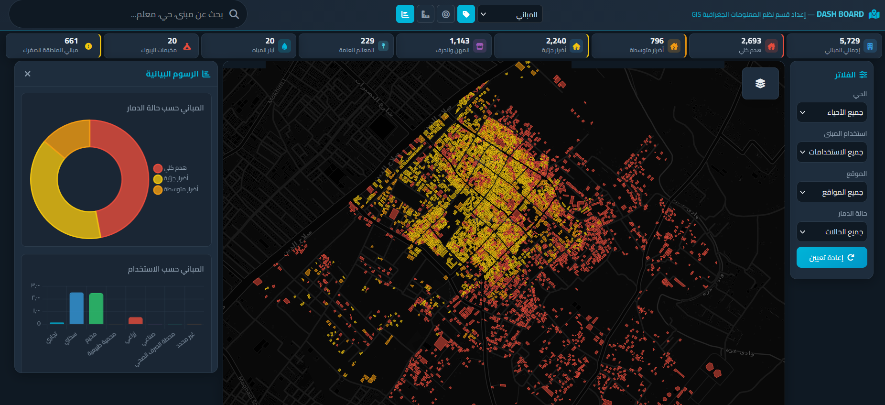
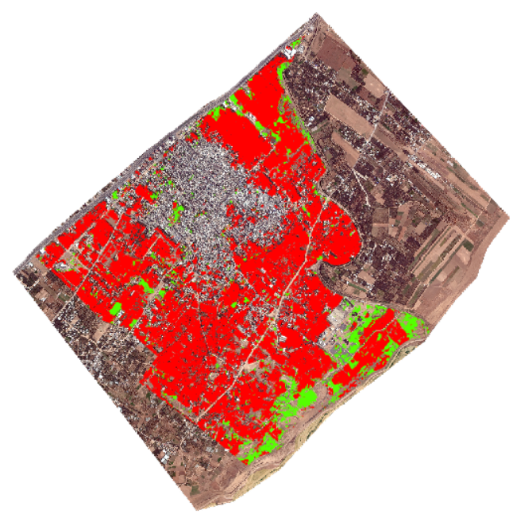

Emergency GIS
Converting field damage assessment into maps, indicators, and recovery decisions.
A privacy-conscious GIS workflow for emergency documentation, public-safe dashboards, and response planning.
Problem
Emergency and recovery teams needed to transform field observations into reviewable spatial indicators quickly while protecting sensitive records.
My Role
Structured assessment layers, prepared general indicators, removed sensitive attributes for public presentation, and shaped the results into dashboard-ready outputs.
Workflow
- Define assessment categories and spatial layers.
- Normalize field records and remove sensitive attributes.
- Build public-safe indicators and summary maps.
- Create dashboard views for monitoring and planning.
- Prepare portfolio screenshots with exact locations and private data removed.
Results / Impact
GISdamage indicators
Public-safedemo outputs
Fasterreview and recovery planning
Visual Proof

